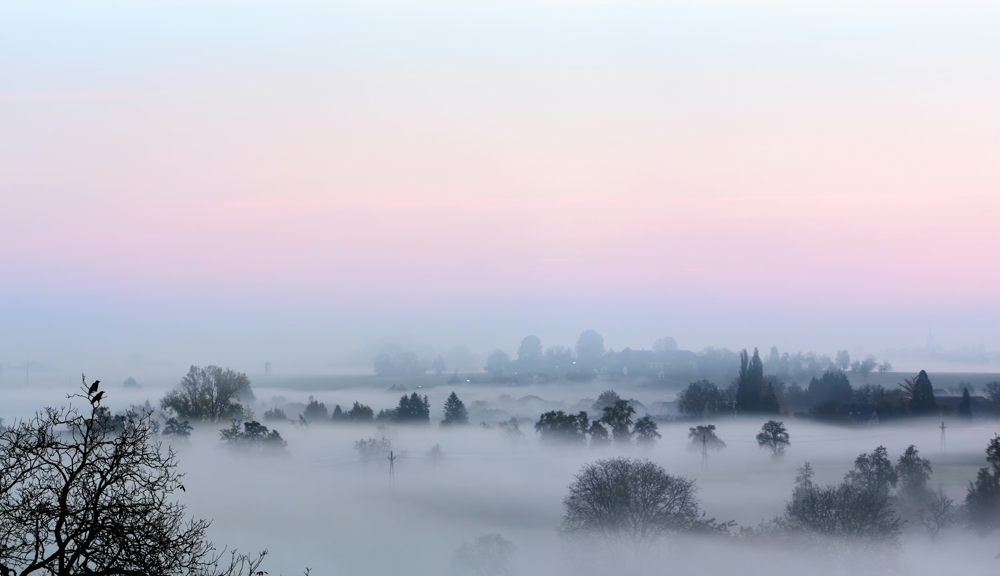

Retreats
Step away from the noise. Return to yourself.
Stillseed Weekend Retreat
A two-day immersion in Shamatha and Vipassana meditation, conscious breathwork, and mindful eating. Held in a quiet location near Klang Valley. Small group format (max 12).
Includes: All meals, accommodation, guided sessions, and a private consultation.
Inquire
Mindful Coffee & Meditation Morning
A four-hour deep dive beginning with a guided mindful coffee brewing session, followed by Shamatha meditation instruction, walking meditation, and closing breathwork.
Includes: Premium coffee, light breakfast, and take-home brewing guide.
Inquire